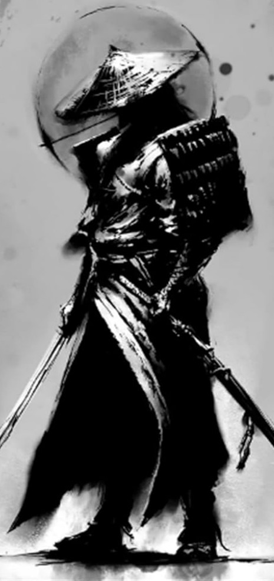
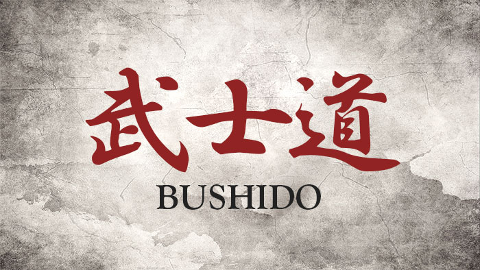
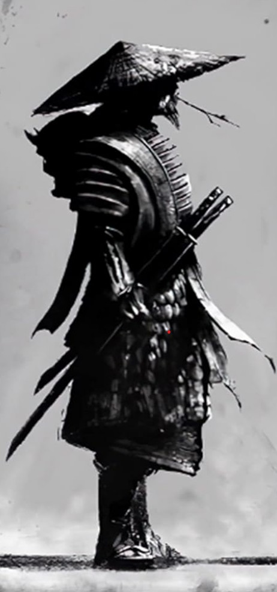

Gi (Rectitud)
Sé honrado en tus tratos con todo el mundo. Cree en la justicia, pero no en la que emana de los demás, sino en la tuya propia.



Sé honrado en tus tratos con todo el mundo. Cree en la justicia, pero no en la que emana de los demás, sino en la tuya propia.

Álzate sobre las masas de gente que temen actuar. Ocultarse como una tortuga en su caparazón no es vivir.

Mediante el entrenamiento intenso el samurái se vuelve rápido y fuerte. Debe usar esa fuerza para el bien de todos. Ayuda a tus compañeros en cualquier oportunidad.

Los samuráis no tienen motivos para ser crueles. No necesitan demostrar su fuerza. Un samurái es cortés incluso con sus enemigos. Sin esta muestra de respeto no somos mejores que los animales.

Cuando un samurái dice que hará algo, es como si ya estuviera hecho. Nada en este mundo lo detendrá en la realización de lo que ha dicho que hará. Hablar y hacer son la misma acción.

El verdadero samurái solo tiene un juez de su propio honor, y es él mismo. Las decisiones que tomas y cómo las llevas a cabo son un reflejo de quién eres en realidad.

Haber hecho o dicho algo significa que ese "algo" te pertenece. Eres responsable de ello y de todas las consecuencias que le sigan. El samurái es intensamente leal a aquellos bajo su cuidado.